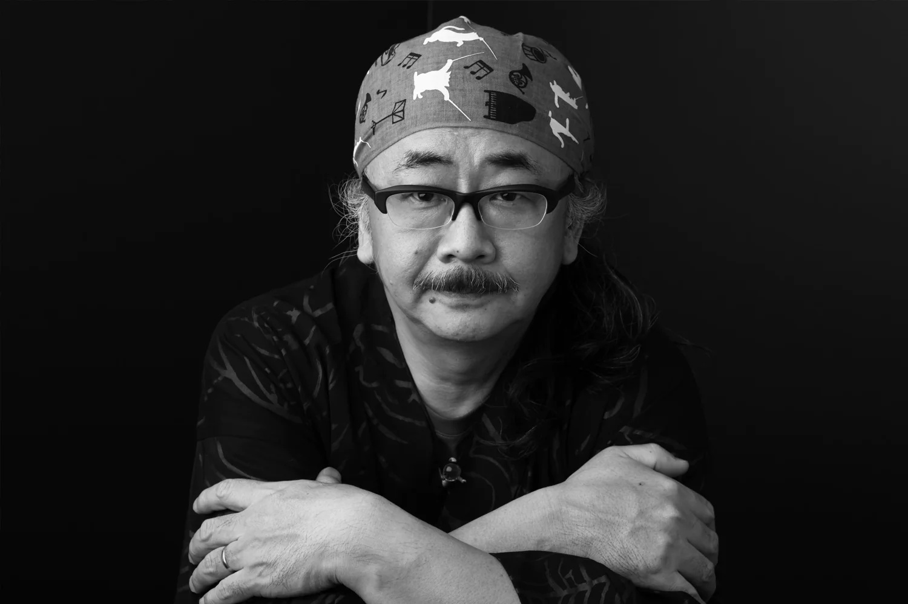

<div role="main" class="container mt-5">

  <div class="row">
    <div class="col d-flex flex-column justify-content-center align-items-center">
      
      <span>Source: <a href="https://www.soundoflife.com/blogs/people/nobuo-uematsu-final-fantasy">Sound of Life</a></span>
    </div>
    <div class="col">
      <h1>Nobuo Umeatsu</h1>
      <p>Nobuo Uematsu is a famous composer most notably known for his work writing scores for video games. Uematsu's most famous works come from the Final Fantasy franchise. Born in Kochi, Kochi Prefecture, Japan, on March 21st 1959, he received his undergraduate degree in English from Kanagawa University before joining a bunch of different bands playing music in his early years. His first big break came from Square Co., the company behind the Final Fantasy franchise, who recognized his talents and offered him a job working on various soundtracks for their games. Ever since, he has created masterpiece after masterpiece and continues to write music to this day. </p>
    </div>
  </div>
</div>
